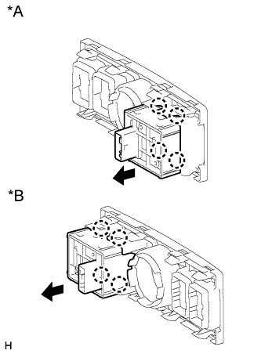

ПЕРЕКЛЮЧАТЕЛЬ CRAWL > УСТАНОВКА |
| 1. УСТАНОВИТЕ ПЕРЕКЛЮЧАТЕЛЬ CRAWL В СБОРЕ |
|  |
Введите в зацепление 4 захвата, чтобы закрепить переключатель Crawl.
| *A | Для моделей с левосторонним рулевым управлением |
| *B | Для моделей с правосторонним рулевым управлением |
Подсоедините разъем.
| 2. УСТАНОВИТЕ ПЕРЕДНЮЮ НАКЛАДКУ ВЕРХНЕЙ ОБЛИЦОВКИ ПАНЕЛИ ПОЛА |
Введите в зацепление 5 фиксаторов, чтобы установить переднюю накладку верхней облицовки панели пола.
| 3. УСТАНОВИТЕ ЛЕВУЮ ОТДЕЛОЧНУЮ НАКЛАДКУ ПАНЕЛИ ПРИБОРОВ |
Введите в зацепление 4 фиксатора, чтобы установить крайнюю отделочную накладку панели приборов.
| 4. УСТАНОВИТЕ ПРАВУЮ ОТДЕЛОЧНУЮ НАКЛАДКУ ПАНЕЛИ ПРИБОРОВ |
Подсоедините разъем.
Введите в зацепление 4 фиксатора, чтобы установить крайнюю отделочную накладку панели приборов.
| 5. УСТАНОВИТЕ ПОДУШКУ ОТДЕЛОЧНОЙ НАКЛАДКИ ПАНЕЛИ ПРИБОРОВ № 2 |
Введите в зацепление 5 фиксаторов, чтобы установить подушку отделочной накладки панели приборов № 2.
| 6. УСТАНОВИТЕ ПОДУШКУ ОТДЕЛОЧНОЙ НАКЛАДКИ ПАНЕЛИ ПРИБОРОВ № 1 |
| 7. ВЫПОЛНИТЕ КАЛИБРОВКУ СИСТЕМЫ CRAWL |
Выполните калибровку системы Crawl (Нажмите здесь).